Reference leaves recovered
Curated leaves matched at intersection-over-union ≥ 0.5 without using those labels as pipeline input.
Research project · Iowa State University
Raw point clouds become organ-level segmentations, editable procedural plant models, and scan-fitted NURBS geometry.
Iowa State University · Department of Mechanical Engineering · Translational AI Center · Plant Science Institute
Overview
Building useful 3D crop models from scans requires more than a mesh: leaves must be identified, measured, and represented as editable surfaces. This pipeline uses a multimodal VLM only to annotate sparse leaf evidence in rendered views. Deterministic geometry carries the reconstruction from those images to the final plant model.
Cross-view consensus merges the annotations into physical leaf identities. A surface-graph workflow grows each identity over its full blade, measured traits populate a procedural plant descriptor, and differentiable NURBS fitting refines every leaf against its scan points while preserving its attachment to the stalk.
Method
Each stage has an explicit input/output contract and can be resumed from validated artifacts.
Align the scan, shift the stalk base, and create eight orthographic views.
Mark leaf midlines, attachment points, and the visible stalk in image space.
Back-project view evidence and reconcile it into one identity per physical leaf.
Grow sparse midlines over the surface graph and resolve point ownership.
Measure organ traits and generate an editable PPG plant from the descriptor.
Optimize each leaf surface to its scan points with attachment and orientation safeguards.
Ten reported examples
Blender turntables align the scan, midlines, leaf segmentation, procedural model, and refined surface for every reported plant.
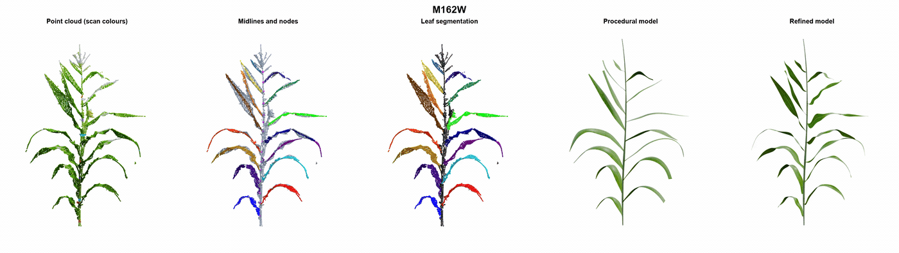
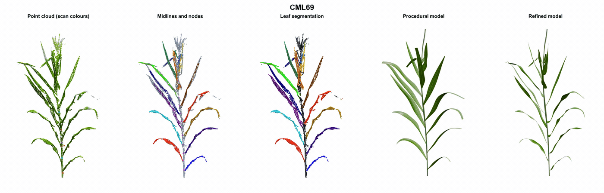
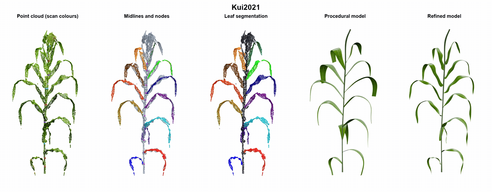
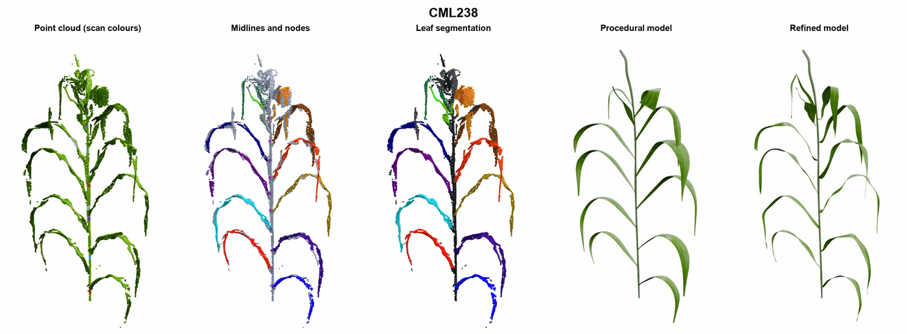
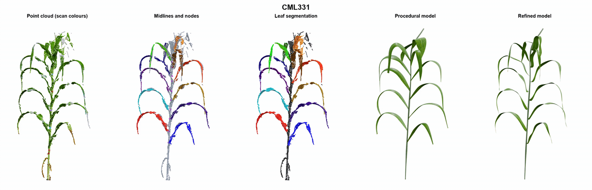
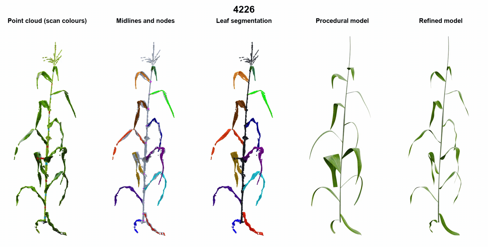
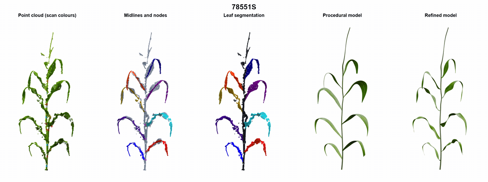
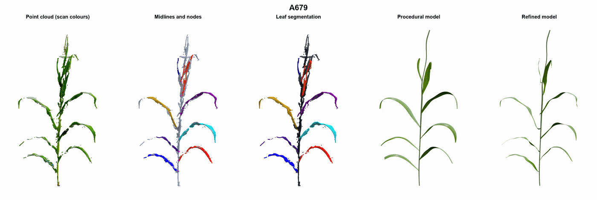
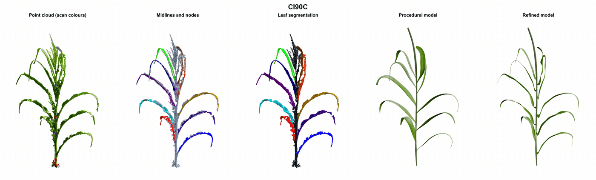
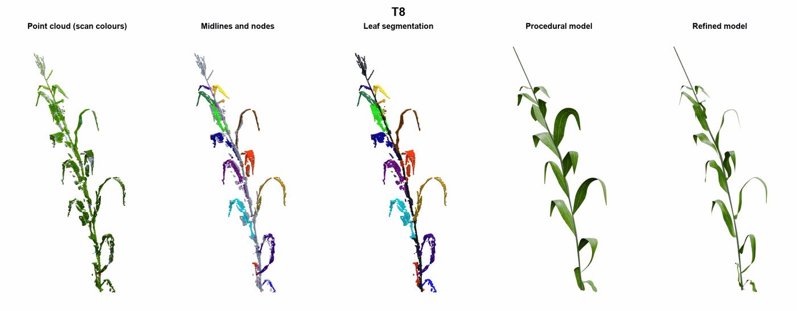
Results
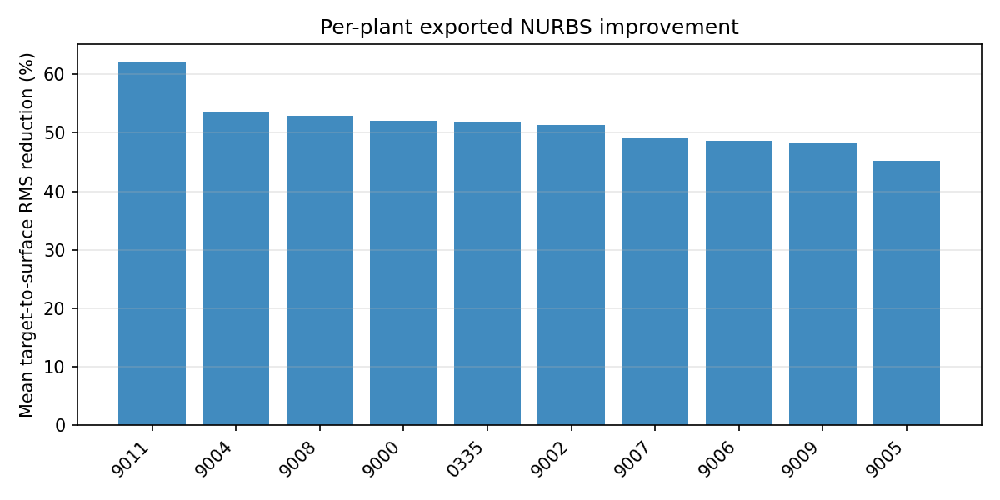
Curated leaves matched at intersection-over-union ≥ 0.5 without using those labels as pipeline input.
The final reconstructions were closer to their scans than the earlier semi-automated PSO + NURBS-Diff models.
Measured over 100 field-grown maize scans spanning a diversity panel.
Availability
The preprint is available on arXiv. The journal link will be added when available. The implementation is currently maintained in a private repository and will be shared upon acceptance.
Authors
Citation
Cite the arXiv preprint below; the final journal record will replace it after publication.
@article{hadadi_vlm_maize,
title = {A Vision-Language Model (VLM)-based Pipeline for
End-to-End Procedural Modeling of Field-Grown Maize
from Point Clouds},
author = {Hadadi, Mozhgan and Jubery, Talukder Z. and
Krishnamurthy, Adarsh and
Ganapathysubramanian, Baskar},
year = {2026},
eprint = {2610.03468},
archivePrefix = {arXiv},
primaryClass = {cs.CV},
doi = {10.48550/arXiv.2610.03468},
url = {https://arxiv.org/abs/2610.03468}
}